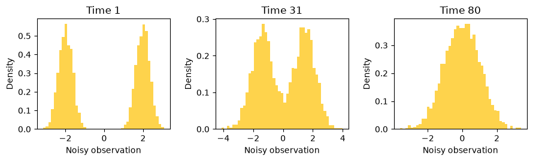
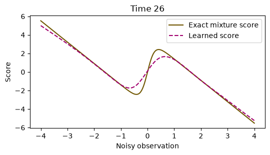
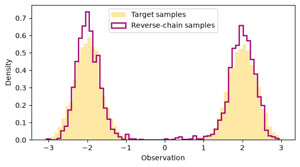

8 · Diffusion and score-based generation#
Question. How can learning to remove noise support generation from noise?
Download the executed notebook
Diffusion models train a reverse process for a known noising mechanism. We will fit a one-dimensional denoiser to a two-component Gaussian mixture, then run an explicit reverse chain. The example is small enough that we can also calculate the true noisy density’s score and compare it with the learned function.
Prerequisites: Chapters 2 and 7, Gaussian conditioning, and gradients. Outcomes: simulate the forward marginal; distinguish noise prediction from direct observation reconstruction; derive the score relation; inspect a learned reverse sampler. No images, pretrained weights, or external datasets are required.
8.1 · A known forward process#
Index transitions by \(t=1,\ldots,T\). Define \(\alpha_t=1-\beta_t\) and \(\bar\alpha_t=\prod_{s=1}^t\alpha_s\). The forward Markov transition is
Gaussian composition gives a direct marginal draw:
Thus training can sample a random time and generate its noisy observation without running every earlier transition. The schedule below leaves little signal at its final time. Starting the reverse chain at a standard normal is still an approximation unless the terminal forward marginal is exactly that normal distribution.
import numpy as np
import torch
from torch import nn
import matplotlib.pyplot as plt
torch.set_num_threads(1)
torch.manual_seed(8)
T = 80
beta = torch.linspace(0.001, 0.10, T)
alpha = 1 - beta
alpha_bar = torch.cumprod(alpha, dim=0)
def data_sample(n):
sign = 2 * torch.randint(0, 2, (n, 1)).float() - 1
return 2 * sign + 0.35 * torch.randn(n, 1)
def noisy_sample(x0, t):
noise = torch.randn_like(x0)
a = alpha_bar[t, None]
return a.sqrt() * x0 + (1-a).sqrt() * noise, noise
x0 = data_sample(3000)
fig, axes = plt.subplots(1, 3, figsize=(9, 2.8))
for ax, index in zip(axes, [0, 30, T-1]):
xt, _ = noisy_sample(x0, torch.full((len(x0),), index))
ax.hist(xt.numpy().ravel(), bins=45, density=True, color='#fed34c')
ax.set(title=f'Time {index+1}', xlabel='Noisy observation', ylabel='Density')
plt.tight_layout()
plt.show()
print('Final cumulative signal coefficient:', round(float(alpha_bar[-1]), 4))

Final cumulative signal coefficient: 0.0153
Python uses index zero for mathematical time one. Keeping this distinction explicit avoids off-by-one errors in the reverse variance and the final denoising step.
8.2 · Noise prediction is a regression problem#
We train \(\epsilon_\theta(x_t,t)\) by squared error against the injected noise. Its population minimizer at each time is \(\mathbb E[\epsilon\mid x_t,t]\). The network must receive time because the optimal function changes as the noise level changes. Our simplified objective weights times uniformly; it is not the full variational likelihood objective with all of its time-dependent coefficients.
class Denoiser(nn.Module):
def __init__(self):
super().__init__()
self.network = nn.Sequential(nn.Linear(4, 48), nn.SiLU(),
nn.Linear(48, 48), nn.SiLU(), nn.Linear(48, 1))
def forward(self, x, t):
u = t.float()[:, None] / (T-1)
features = torch.cat([x, u, torch.sin(torch.pi*u), torch.cos(torch.pi*u)], dim=1)
return self.network(features)
model = Denoiser()
optimizer = torch.optim.Adam(model.parameters(), lr=0.003)
losses = []
for step in range(1000):
clean = data_sample(256)
t = torch.randint(T, (len(clean),))
noisy, noise = noisy_sample(clean, t)
optimizer.zero_grad()
loss = ((model(noisy, t) - noise)**2).mean()
loss.backward()
optimizer.step()
if step % 25 == 0:
losses.append(loss.item())
with torch.no_grad():
clean = data_sample(4000)
times = torch.randint(T, (len(clean),))
noisy, noise = noisy_sample(clean, times)
mse = ((model(noisy, times)-noise)**2).mean().item()
zero_mse = (noise**2).mean().item()
print('Fresh-sample noise MSE:', round(mse, 3))
print('Zero-prediction baseline:', round(zero_mse, 3))
assert np.isfinite(mse)
Fresh-sample noise MSE: 0.415
Zero-prediction baseline: 1.029
Fresh samples here come from a simulator, so training need not reuse a fixed finite dataset. The reported error measures generalization to new draws from that simulator. A fixed empirical image dataset would raise additional questions about memorization, coverage, and distribution shift.
8.3 · The score is a derivative with respect to the observation#
For the noisy marginal density \(p_t(x)\), the score is \(s_t(x)=\nabla_x\log p_t(x)\). This differs from the parametric likelihood score \(\nabla_\theta\log p_\theta(x)\). Differentiating the Gaussian noising density and averaging over the conditional distribution of \(X_0\) gives
For our mixture, each noised component is Gaussian with means \(\pm2\sqrt{\bar\alpha_t}\) and variance \(0.35^2\bar\alpha_t+1-\bar\alpha_t\). Its exact score is the posterior-component-weighted average of the component scores. This gives an unusually informative diagnostic that would be unavailable for a general dataset.
index = 25
grid = torch.linspace(-4, 4, 240)[:, None]
a = float(alpha_bar[index])
means = np.array([-2., 2.]) * np.sqrt(a)
variance = 0.35**2*a + 1-a
g = grid.numpy()
log_components = -0.5*(g-means)**2/variance
responsibilities = np.exp(log_components-log_components.max(1, keepdims=True))
responsibilities /= responsibilities.sum(1, keepdims=True)
exact_score = (responsibilities * (means-g)/variance).sum(1)
with torch.no_grad():
predicted_score = -model(grid, torch.full((len(grid),), index)).numpy().ravel()/np.sqrt(1-a)
fig, ax = plt.subplots(figsize=(5.5, 3.2))
ax.plot(g.ravel(), exact_score, label='Exact mixture score', color='#705600')
ax.plot(g.ravel(), predicted_score, '--', label='Learned score', color='#a2006e')
ax.set(xlabel='Noisy observation', ylabel='Score', title=f'Time {index+1}')
ax.legend()
plt.tight_layout()
plt.show()

Agreement near high-density regions does not guarantee accuracy in the tails. A global average training loss can conceal local failures important to the reverse trajectory.
8.4 · A learned reverse chain#
We use the standard noise-prediction mean parameterization
The chosen reverse variance is \(\tilde\beta_t=\beta_t(1-\bar\alpha_{t-1})/(1-\bar\alpha_t)\), with \(\bar\alpha_0=1\). At the last reverse step, no extra noise is added. Even with this parameterization, finite steps and an imperfect denoiser introduce approximation error.
@torch.no_grad()
def sample_reverse(n):
model.eval()
x = torch.randn(n, 1)
for index in range(T-1, -1, -1):
t = torch.full((n,), index)
predicted_noise = model(x, t)
mean = (x - beta[index]/torch.sqrt(1-alpha_bar[index])*predicted_noise)
mean = mean / torch.sqrt(alpha[index])
previous = alpha_bar[index-1] if index > 0 else torch.tensor(1.)
variance = beta[index]*(1-previous)/(1-alpha_bar[index])
x = mean + torch.sqrt(variance)*torch.randn_like(x) if index > 0 else mean
return x
generated = sample_reverse(3000).numpy().ravel()
fresh = data_sample(3000).numpy().ravel()
fig, ax = plt.subplots(figsize=(6, 3.4))
ax.hist(fresh, bins=65, density=True, alpha=0.5, label='Target samples', color='#fed34c')
ax.hist(generated, bins=65, density=True, histtype='step', linewidth=1.8,
label='Reverse-chain samples', color='#a2006e')
ax.set(xlabel='Observation', ylabel='Density')
ax.legend()
plt.tight_layout()
plt.show()
print('Target / generated positive mass:', (fresh > 0).mean(), (generated > 0).mean())
print('Target / generated standard deviation:', fresh.std().round(3), generated.std().round(3))
assert np.isfinite(generated).all()

Target / generated positive mass: 0.49966666666666665 0.5023333333333333
Target / generated standard deviation: 2.027 2.001
Check both modes, central low-density regions, and tail spread. Sampling success is a property of the entire learned reverse chain, not just one denoising MSE. To compare schedules, retrain under each schedule and use the same evaluation function and sample budget.
8.5 · Conditioning and the limits of the example#
A conditional denoiser receives additional information \(c\), such as a class label or text representation, and estimates \(\epsilon_\theta(x_t,t,c)\). Guidance methods modify the reverse direction to favor a condition, which can change the diversity–fidelity tradeoff. They do not establish that a requested scientific or factual property is true.
Our one-dimensional example explains noising, denoising, and sampling. It does not reproduce the architecture, latent compression, data scale, or perceptual evaluation of an image-generation system. The statistical questions remain: what distribution is modeled, what is conditioned on, and how is the generated distribution evaluated?
8.6 · Exercises and worked solutions#
Forward mean and variance: condition on \(x_0\). Solution: the mean is \(\sqrt{\bar\alpha_t}x_0\) and covariance is \((1-\bar\alpha_t)I\). Unconditionally, the covariance also includes \(\bar\alpha_t\operatorname{Cov}(X_0)\).
Score distinction: which derivative appears in diffusion? Solution: the derivative with respect to the noisy observation, not with respect to model parameters. Parameter derivatives are still used when fitting the denoiser by gradient descent.
Regression target: why is the learned noise not the exact injected noise for each input? Solution: several clean/noise pairs can produce the same noisy observation. Squared-error regression estimates their conditional mean, leaving irreducible conditional variance.
Final step: why is the reverse variance zero at mathematical time one with our choice? Solution: \(1-\bar\alpha_0=0\). Adding a fresh nonzero noise draw afterward would blur the final samples and implement a different sampler.
Schedule: if terminal \(\bar\alpha_T\) is large, why is starting from \(N(0,I)\) questionable? Solution: the terminal forward distribution retains substantial structure from the data. The sampler then starts from a distribution different from the one used to train its final-time denoiser.
8.7 · Reading and next step#
Denoising Diffusion Probabilistic Models gives the discrete-time formulation and training/sampling algorithms behind this miniature experiment. Next, Chapter 9 asks how an existing model can be adapted with limited parameters or preference observations.